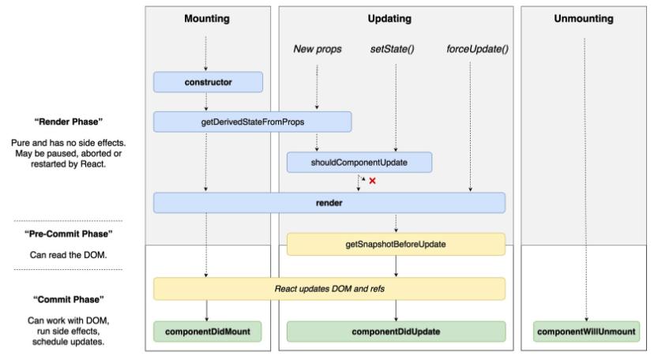

React 학습시 도움되는 사항 정리
| 항목 | 설명 | 비고 |
|---|---|---|
| 대상자 | React를 처음 학습하려고 하는 개발자 | |
| 글의 내용 | 동영상 및 도움 받은 사항을 1차 기록 하기 위한 목적 | |
| 전달 메세지 | 공부하면서 도움 받은 사항을 정리하는 목적입니다. |
1. 동영상 관련
- 생활코딩
- 진리의 이고잉님 (처음 접하는 가벼운 마음으로 듣기 좋습니다.)
- React후에 도입해야 할것들
- [벨라포트]
- react강좌(35강)-by 2016
- react강좌(13강)-by 2018
- 친절하게 최신 강좌 링크를 제공해주셨네요.
- 아직 보지는 못했어요.
- 내용이 많으니 살펴보시고, 필요한 부분 보세요.
강사분 블로그 : https://react-anyone.vlpt.us/ (좋은 내용이 많이 있음)
- 개념
- Virtual DOM
- 실제 Dom이 있고, Virtual생성 후 다른점, 변경이 필요한 경우에만 patch를 진행
영상 : 관련 소개가 잘 되었다고 추천해주신 영상 - React만 Virtual-DOM개념을 사용하는는 것은 아니다.
- Vue, Marko, Maquette, Mithril 등등이 사용합니다.
- 실제 Dom이 있고, Virtual생성 후 다른점, 변경이 필요한 경우에만 patch를 진행
- Webpack과 Babel
- codesandbox
- react 및 angular, vue등을 테스트 할수 있는 사이트
- JSX : react-component구성시, babel형태로 구성함
영상 : 누구든지 하는 리액트 #6 JSX 기본 문법 알아보기 (i)
- html과 비슷하지만, 다르다 (지켜야 할 문법이 있다.)
- 작성된 코드의 결과물은 Javascript로 변환된다.
- var vs const vs let (선택 기준)
- Props 와 State
- 구조 분해 할당
- Props (Read-Only)
- State
- 구조 분해 할당
- LifeCycle
- 나타날때
- 업데이트 될때
- 사라질때  LifeCycle API 참고 문서 코드
- componentDidMount (딱보아도 많이 사용할거 같네요)
- Virtual DOM
- 제로초
- 아직 보지는 못했어요.